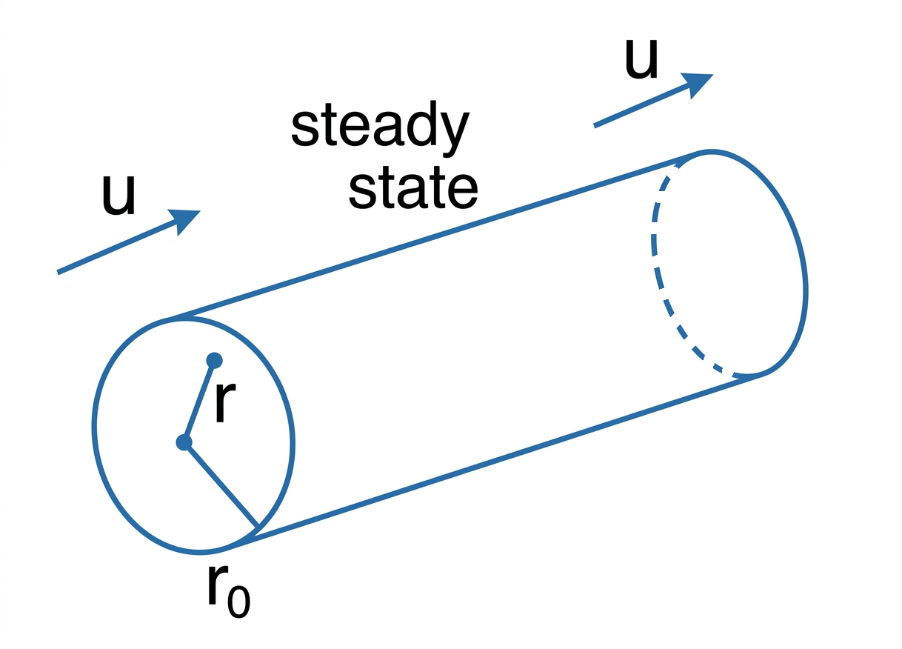
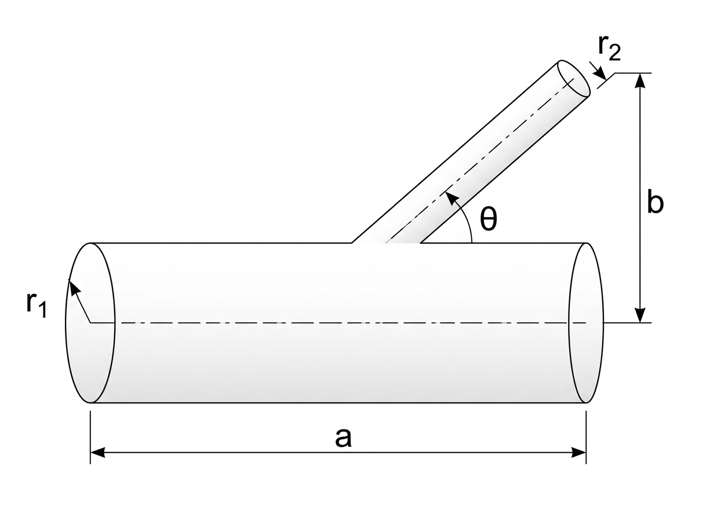

Advanced Atmospheric Dynamics - Week 2#
日期: 2026.03.01
1 連續方程式與擴散守恆 (Continuity Equation & Diffusion)#
1.1 基本物理量與假設#
在推導連續方程式前，我們必須確立幾個核心概念：
物質體積 (Material Volume, \(V_m\))：隨著流體運動的封閉體積，其內部質量守恆。
連續體假設：流體密度 \(\rho\) 必須能在宏觀上被平滑定義。這要求觀測的物理尺度 \(L\) 必須遠大於分子的平均自由徑 \(l\)（即 \(l \ll L\)）。
任意體積 (Arbitrary Volume)：方程式對空間中任何一個固定大小的控制體積皆成立。
💡 物理史類比：富蘭克林的池塘實驗 班傑明·富蘭克林曾將一茶匙的油滴入池塘，觀察到油膜擴散至約半英畝大就不再擴散。假設油膜最終厚度為單一分子層，利用巨觀的體積與面積關係 (\(V = A \cdot h\))，即可估算出油分子的直徑。這是一個利用巨觀連續體現象去推測微觀尺度的經典例子，與我們定義 \(\rho\) 的概念相呼應。
1.2 定義「一般化」的連續方程式#
\(C\) (Concentration / Content)：代表我們想討論的「某種物理量的空間分佈」，它可以是質量密度 (\(\rho\))、熱能密度 (\(e\))、電荷密度、甚至是機率密度假設 \(C\) 的單位是 \([C]\)
\(\vec{J}_C\) (Flux density)：代表這個物理量 \(C\) 在空間中流動的「通量密度」， \(\vec{J}_C\) 的單位是 \([C] \cdot \frac{m}{s}\)
\(\vec{J}_C\) 的普遍物理意義永遠是：「每單位時間 (\(s\))、穿過每單位截面積 (\(m^2\)) 的總物理量 (\([C] \cdot m^3\))」，這就是「通量 (Flux)」的本質
應用：流體連續方程式#
給定\(C\)是流體密度 \(\rho \)、\(\vec{J}_C=\rho \mathbf{u}\)，根據守恆定律，單位時間內控制體積內密度的變化等於通量進出該體積的淨值：
\(\rho\): 流體密度 \([\text{kg} \cdot \text{m}^{-3}]\)
\(\mathbf{u}\): 三維速度向量 \((u, v, w)\) \([\text{m} \cdot \text{s}^{-1}]\)
\(t\): 時間 \([\text{s}]\)
應用：熱傳導方程式#
變數定義與對應關係#
在廣義的連續方程式 \(\frac{\partial C}{\partial t} + \nabla \cdot \vec{J}_C = 0\) 中，我們必須先定義好這套系統裡的「主體變數 \(C\)」與「通量 \(\vec{J}_C\)」分別代表什麼實體物理量：
廣義主體 \(C \implies\) 體積熱能密度 \(e\)
定義：單位體積內所含的熱能。
公式：\(e = \rho c_p T\)
變數說明：
\(\rho\) 為密度 \([\text{kg} \cdot \text{m}^{-3}]\)
\(c_p\) 為等壓比熱 \([\text{J} \cdot \text{kg}^{-1} \cdot \text{K}^{-1}]\)
\(T\) 為絕對溫度 \([\text{K}]\)
單位：\([\text{J} \cdot \text{m}^{-3}]\)
廣義通量 \(\vec{J}_C \implies\) 熱通量密度 \(\vec{J}_q\)
定義：單位時間內，通過單位面積的熱能。
公式：根據傅立葉熱傳導定律（Fourier’s Law），熱量會從高溫往低溫流動，其大小與溫度梯度成正比，即 \(\vec{J}_q = -k \nabla T\)。
變數說明：
\(k\) 為熱傳導係數（Thermal conductivity） \([\text{W} \cdot \text{m}^{-1} \text{K}^{-1}]\)
負號代表熱量往溫度「下降」的方向流動
單位：\([\text{W} \cdot \text{m}^{-2}]=[\text{J} \cdot \text{m}^{-2} \cdot \text{s}^{-1}]\)

已知與假設#
在進行數學推導前，我們必須先框定這個方程式適用的物理環境
【已知 1】無巨觀流體運動：
我們探討的是固體，或者是一塊完全靜止沒有對流（Advection）的流體，熱能只能靠分子碰撞（傳導）來傳遞。
【假設 1】均質且不可壓縮：
假設材料是均勻的，密度 \(\rho\)、比熱 \(c_p\) 與熱傳導係數 \(k\) 在空間與時間中皆為常數，不隨溫度變化。
\(\frac{\partial (\rho c_p T)}{\partial t} = \rho c_p \frac{\partial T}{\partial t}\)
\(\nabla \cdot (-k \nabla T) = k \nabla \cdot (\nabla T)\)
【假設 2】無內部熱源：
假設系統內部沒有化學反應或輻射加熱（如無核反應或微波加熱），即內部生熱項為零。
【假設 3】熱擴散係數 \(\alpha = \frac{k}{\rho c_p}\)
分子 \(k\) (熱傳導係數)：代表材料「導熱的能力」
金屬的 \(k\) 很大，木頭的 \(k\) 很小
單位:\([\text{W} \cdot \text{m}^{-1}\cdot \text{K}^{-1}]\)，材料厚度為 \(1\) 公尺、兩端溫差為 \(1\) 度時，每秒鐘會有多少焦耳的熱能穿過 \(1\) 平方公尺的面積
分母 \(\rho c_p\) (體積熱容量)：代表材料「儲存熱能的能力」
水的值很大，空氣的值很小
單位:\([\text{kg} \cdot \text{m}^{-3} \cdot \text{J} \cdot \text{kg}^{-1}\cdot \text{K}^{-1}] = [\text{J}\cdot \text{m}^{-3}\cdot \text{K}^{-1}]\)，要讓 \(1\) 立方公尺的物體升溫 \(1\) 度，需要吃掉多少熱量
推導#
\(T\): 是溫度 \([\text{K}]\)
\(t\): 是時間 \([\text{s}]\)
\(k\): 是熱傳導係數 \([\text{W} \cdot \text{m}^{-1}\cdot \text{K}^{-1}]\)
\(\rho\) 是流體密度 \([\text{kg} \cdot \text{m}^{-3}]\)
\(c_p\) 為等壓比熱 \([\text{J} \cdot \text{kg}^{-1}\cdot \text{K}^{-1}]\)
\(\alpha\) 為熱擴散係數（Thermal diffusivity） \([\text{m}^{2}\cdot \text{s}^{-1}]\)
📐 數學與物理的現實落差： 這個偏微分方程是建立在泰勒展開式中極限 \(\Delta x \to 0\) 的數學基礎上。但在實際大氣觀測中，我們儀器的解析度無法做到真正的 \(\Delta x \to 0\)。此外，大氣中的亂流（Turbulence）不僅存在大尺度能量傳遞至小尺度（Energy cascade），也存在小尺度擾動發展成大尺度結構的現象（如斜壓不穩定、正壓不穩定），這涉及到從線性行為過渡到非線性行為的複雜動力學。
2. 動量方程式與黏滯耗散 (Momentum Equation & Viscous Dissipation)#
2.1 積分形式的動量方程式#
納維-斯托克斯方程式（Navier-Stokes Equation）的積分形式描述了控制體積 \(V_m\) 內動量的變化率等於所受外力的總和：
\(\mathbf{u}\): 三維速度向量 \((u, v, w)\) \([\text{m} \cdot \text{s}^{-1}]\)
\(\mathbf{g}\): 重力加速度向量 \((0, 0, -g)\) \([\text{m} \cdot \text{s}^{-2}]\)
\(P\): 氣壓 \( [\text{Pa}] = [\text{kg} \cdot \text{m}^{-1}\cdot \text{s}^{-2}] \)
\(\rho\): 流體密度 \([\text{kg} \cdot \text{m}^{-3}]\)
\(\mu\): 動力黏滯係數 (Dynamic viscosity) \([\text{kg} \cdot \text{m}^{-1}\cdot \text{s}^{-1}] \)
2.2 黏滯力與拉普拉斯算子 (\(\nabla^2\))#
方程式中的最後一項(\(\int_{V_m} \mu \nabla^2 \mathbf{u} \, dV\))是由流體內摩擦引起的黏滯力，在物理上 \(\mu \frac{\partial u_i}{\partial x_j}\) 代表 \(u_i\) 動量在 \(x_j\) 方向上的傳送（動量通量），其散度即為 \(\mu \nabla^2 \mathbf{u}\)。
這在做什麼： 拉普拉斯算子 \(\nabla^2\) 在物理方程式中通常扮演「平滑化」（Smoothing）的角色，它是一個「消耗項」（Sink）。
數學推導視角：若我們將速度場轉換到傅立葉空間（Fourier space），對空間微分兩次會產生 \(-k^2\)（\(k\) 為波數），這意味著高頻擾動（波數 \(k\) 很大，即劇烈的空間變化）會被快速衰減。它會將空間中的極大值壓低、極小值拉高。
類比：如果把世界看作一個動力系統，\(\frac{\partial \mathbf{u}}{\partial t} = \nu \nabla^2 \mathbf{u}\) 就是一個「抹平一切差異」的方程式（黑色玩笑地說，這是某種物理學上的「\(\mathbb{C}\mathbb{N}-\dot{8}\dot{9}\mathit{64}\)大同世界」方程式）。
3. 亂流與渦流擴散 (Turbulence & Eddy Diffusivity)#
3.1a 已知與假設#
【假設 1】雷諾分解 (Reynolds Decomposition)
在亂流中，我們將物理量 \(q\) 分解為平均態 \(\bar{q}\) 與擾動態 \(q'\)：\(q = \bar{q} + q'\)，假設擾動量純粹受到擴散影響
【已知 1】只考慮耗散的平流擴散方程式
需要一些假設
雷諾分解
假設沒有背景風（或跟著背景風走）：令 \(\bar{\mathbf{u}} = 0\)
假設背景場很均勻（沒有梯度）：令 \(\nabla \bar{q} = 0\)
線性化假設（忽略極小項）：假設擾動非常微弱，兩個微小的擾動相乘 \(\mathbf{u}' \cdot \nabla q'\) 近似於 0
\(\frac{\partial q}{\partial t}\)：局地隨時間的變化
\(\mathbf{u} \cdot \nabla q\)：被流體速度 \(\mathbf{u}\) 帶著走的平流項
\(\nu \nabla^2 q\)：分子擴散項（抹平差異的力量）
【已知 2】分部積分與散度定理
\[q' \nabla^2 q' = \nabla \cdot (q' \nabla q') - \nabla q' \cdot \nabla q'\]
3.1b 擾動動能的耗散 (Kinetic Energy Dissipation)#
在多數的流體力學基礎推導中，\(q\) 通常被用來代表「任意一種具備擴散性質的純量」（例如：溫度 \(T\)、比濕 \(r\)、甚至是某種化學濃度），分項 \(\int \frac{1}{2} {q'}^2 \, dV\) 在統計數學上真正的名字叫做 「擾動變異數 (Scalar Variance)」 ，它量度的是這個純量場「不均勻的程度」（例如一塊冷空氣與一塊熱空氣的溫差起伏）。想要看嚴格擾動動能的耗散證明請到這裡。
我們來觀察擾動變異數（代表亂流動能 Kinetic Energy, KE）隨時間的變化，對擾動量平方的一半進行空間積分並對時間求導：
物理意義： 這證明了耗散是與速度梯度的平方 (\(|\nabla q'|^2\)) 成正比的（負號代表能量正在減少），在 2D 亂流的Energy cascade（能量串級）中系統會傾向讓梯度極小化，如果我們尋找使耗散最小化的穩態函數，就會得到拉普拉斯方程式（Laplace equation）\(\nabla^2 q' = 0\)。
💡 巨觀與微觀的類比：渦流擴散係數 \(K\) 在地球大氣中，分子黏滯係數 \(\nu\) 非常小（幾乎要趴在貼近地板的邊界層才感受得到），在大尺度氣象學中我們經常使用「渦流擴散係數 (Eddy diffusivity, \(K\))」，它在數學形式上與 \(\nu\) 一模一樣但物理機制不同：\(\nu\) 是分子間的碰撞交換，而 \(K\) 是一大塊熱空氣和一大塊冷空氣在大氣中互相翻攪（亂流）。即使自由大氣不考慮分子黏滯力 \(\mu\)，我們依舊能用相同的數學框架來理解大氣亂流。
4. 白金漢 \(\pi\) 定理與雷諾數 (Buckingham \(\pi\) Theorem & Reynolds Number)#
4.1 因次分析 (Dimensional Analysis)#
根據白金漢 \(\pi\) 定理（Buckingham \(\pi\) Theorem）：
假設流體所受外力 \(F\) 與動力黏滯係數 \(\mu\)、特徵速度 \(v\)、特徵長度 \(l\)、流體密度 \(\rho\) 有關。 函數關係：\(F(\mu, v, l, \rho, F_{force}) = 0\) 這裡有 5 個變數，基本單位有 3 個（質量 M、長度 L、時間 T）。 因此，我們可以得出 \(5 - 3 = 2\) 個無因次參數，組合後得到：
\(\frac{\rho v l}{\mu}\) 就是著名的 雷諾數 (Reynolds Number, \(Re\))
\(Re = \frac{\text{慣性力}}{\text{黏滯力}} = \frac{\text{擴散時間尺度}}{\text{慣性時間尺度}}\)
當 \(Re\) 很大時，擴散時間遠大於慣性時間，意味著在短暫的慣性運動時間內，擴散效應可忽略不計
4.2 阻力係數圖 的物理拆解#
{kind=link}
觀察摩擦力係數與雷諾數的關係圖：
A區 (層流，Low \(Re\) domain, \(Re<10^2\))：
\(y \propto 1/x \Rightarrow \frac{F}{\rho v^2 l^2} \propto \frac{\mu}{\rho v l} \Rightarrow F \propto \mu v l\)
這代表在低雷諾數下（如微小顆粒或黏稠流體），阻力主要由黏滯力 \(\mu\) 貢獻，密度 \(\rho\) 幾乎沒有發揮作用（對應斯托克斯阻力定律 Stokes’ drag）
B區 (\(10^2Re<10^5\))：
\(y \sim \text{const} \Rightarrow frac{F}{\rho v^2 l^2} \sim 1 \Rightarrow F \propto \rho v^2 l^2\)
此時慣性力主導
類比：同樣射速的水槍與空氣槍，水槍造成的打擊力 (\(F\)) 會大空氣槍大約 1000 倍，因為 \(\rho_{\text{water}} \approx 1000 \rho_{\text{air}}\)，此時處於 B 區，力與密度成正比
C區 (亂流，High \(Re\) domain, \(<10^5Re\))：
沒有明確的函數關係
4.3 PM2.5 在大氣中的沉降計算#
已知在低雷諾數下的終端速度公式為： $\(v_{\text{terminal}} = \frac{2}{9}\frac{r^2\rho g}{\mu}\)\( *(註：PM2.5 顆粒極小 (\)r\( 小) 且沉降速度慢 (\)v\( 小)，因此 \)Re \ll 1\(，必須代入低雷諾數的公式，而非 \)v \propto \sqrt{r}$ 的高雷諾數公式)*
參數代入：
半徑 \(r \sim 2.5 \times 10^{-6} [\text{m} ]\)
顆粒密度 \(\rho \sim 10^3 [\text{m} \cdot \text{m}^{-3}]\) (假設類似水滴或固體微粒)
重力 \(g \sim 10 [\text{m} \cdot \text{s}^{-2}]\)
空氣動力黏滯係數 \(\mu \sim 10^{-5} [\text{kg} \cdot \text{m}^{-1}\cdot \text{s}^{-1}] \)
算出來的終端速度 \(v_{\text{terminal}} \sim 10^{-3} [\text{m} \cdot \text{s}^{-1}] \)。 這代表大面積（大 \(r\)）的顆粒落得越快。
沉降時間尺度評估：
若 PM2.5 處於邊界層 (厚度約 \(10^3 \ m\))：完全沉降需 \(10^3 / 10^{-3} = 10^6 [\text{s}] \approx 10 \ \text{天}\)。
若 PM2.5 進入對流層頂 (高度約 \(10^4 \ m\))：完全沉降需 \(10^4 / 10^{-3} = 10^7 [\text{s}] \approx 1 \ \text{年}\)。
結論：一旦污染物（如火山灰、核爆塵）被送入對流層頂或平流層，將會造成「年尺度」的長期全球氣候效應。
5. 圓管流體力學：波以耳定律與電路類比 (Poiseuille Flow)#
5.1 穩態力平衡 (Force Balance)#
想像液體在管子裡等速前進（Steady state），流體的內部摩擦阻力必須等於管子兩端的推力。

這在做什麼：
等號右邊 (\(-\Delta P \pi r^2\))：這是水壓造成的「推力」，\(\Delta P\) 是管子兩端（長度 \(\ell\)）的壓力差，乘上截面積 \(\pi r^2\) 就是總推力。
等號左邊 (\(\mu \frac{du}{dr} 2\pi r \ell\))：這是流體摩擦產生的「黏滯阻力」，\(\mu\) 是黏滯係數，\(\frac{du}{dr}\) 是徑向的速度梯度，乘上該半徑處的圓柱側面積 \(2\pi r \ell\) 就是總摩擦力。
5.2 速度分佈推導 (Velocity Profile)#
將上式移項並進行積分，以找出管內徑向位置 \(r\) 處的速度 \(u(r)\)：
假設與已知#
【已知 1】無滑動邊界條件
在管壁邊緣（\(r = r_0\)），流體黏附於管壁速度為 \(0\)；在任意半徑 \(r\) 速度為 \(u(r)\)
這是一個標準的拋物線分佈。管子中心（\(r=0\)）速度最快，管壁處速度為零。
5.3 總流量計算 (Flow Rate)#
將整個圓管切成無數個面積為 \(2\pi r \, dr\) 的同心圓環，將每一圈的流量積分加總：
這就是著名的 Poiseuille’s Law，總流量 \(I\) 與管徑的「四次方」成正比，\(I \propto r_0^4\) 表示管徑的微小變化會對流量造成巨大影響。
若 \(\frac{\Delta r_0}{r_0} \sim 5\%\)，則 \(\frac{\Delta I}{I} \sim 20\%\)！
5.4 跨領域類比：流體與電路 (Circuit Analogy)#
我們可以將複雜的流體公式改寫成國中學過的歐姆定律形式：
移項觀察 Poiseuille’s Law，可定義出「流阻 (Fluid Resistance)」：
這與電阻定律 \(R_{\text{electric}} = \rho_e \frac{\ell}{A} \propto \frac{\ell}{r^2}\) 概念如出一轍。
💡 生物醫學類比：
人類吃高油食物導致血管稍微阻塞（\(r_0\) 下降 5%），流阻 \(R_{\text{fluid}}\) 會因為四次方關係急遽上升。為維持相同的血流量 \(I\)，心臟必須加壓，導致 \(\Delta P\) 大幅上升（高血壓）。
吃高鹽食物導致血液變稠（動力黏滯係數 \(\mu\) 上升），同樣會讓流阻上升，引發高血壓。這正是心血管疾病危險的物理學根源。
6. 分支管路系統的最佳化：穆雷定律 (Murray’s Law)#
自然界中的血管、氣管，甚至植物的導管，為何會以特定的角度分叉？流體力學提供了一個尋求「總阻力最小」的極值問題解答。
6.1 幾何設定與總流阻方程式#

目標：在固定流體壓力差下，將流體從主管（半徑 \(r_1\)）透過支管（半徑 \(r_2\)）送到末端，並調整分叉角度 \(\theta\) 以達到最大傳送量（即流阻最小化）。
末端空間座標：水平總距離 \(a\)，垂直距離 \(b\)。
支管的長度：利用三角函數，為斜邊 \(b \csc\theta\)。
主管的長度：總水平長度減去支管的水平投影（\(b \cot\theta\)），為 \(a - b \cot\theta\)。
將兩段管子的流阻串聯相加 \(R_{\text{總}} = R_1 + R_2\)： $\( \Delta P = I \cdot R_{\text{總}} = I \cdot \frac{8\mu}{\pi} \left( \frac{a - b \cot\theta}{r_1^4} + \frac{b \csc\theta}{r_2^4} \right) \)$
6.2 尋求最佳分叉角度#
假設與已知#
【已知 1】讓流阻最小: 阻力函數對 \(\theta\) 微分，並令其為零
\[\frac{dR_{\text{總}}}{d\theta} = 0\]【已知 2】三角函數微分基本公式
\(\frac{d}{d\theta}(\cot\theta) = -\csc^2\theta\)
\(\frac{d}{d\theta}(\csc\theta) = -\csc\theta \cot\theta\)
【已知 3】三角函數基本公式
\(\csc\theta = \frac{1}{\sin\theta}\)
\(\cot\theta = \frac{\cos\theta}{\sin\theta}\)
推導#
6.3 物理與生物的印證#
破水管類比 (\(\theta \rightarrow \frac{\pi}{2}\))：若主管破了一個小洞噴水，支管半徑 \(r_2 \ll r_1\)。此時 \(\frac{r_2^4}{r_1^4} \approx 0\)，即 \(\cos\theta = 0\)，解得 \(\theta = 90^\circ\)。這完美吻合了我們在日常生活中看到破水管的水會「垂直」噴出的現象。
樹枝的生長模型修正：雖然樹木在演化中也服從流動阻力最小的力學原則，但正如筆記所洞見的，生物體並非純粹的管線。植物的向光性 (Phototropism) 會為了爭取更多陽光而強行改變枝條的生長角度，因此在建立真實的生物物理模型時，這項因素必須被視為額外的權重加入修正。
7. 旋轉座標系中的動量方程式 (Momentum Equations in a Rotating Frame)#
7a. 2D 圓柱座標系下的動量推導 (局部渦旋/颱風系統)#
在探討像颱風這樣的局部旋轉系統時，使用圓柱座標系 (Cylindrical coordinates) 遠比直角座標系方便。
7a.1 變數與方程式定義#
首先定義我們的出發點——水平旋轉座標系下的動量方程式： $\( \frac{D \vec{V}}{Dt} + f \hat{k} \times \vec{V} = -\frac{1}{\rho} \nabla P \)$
\(\vec{V} = u \hat{r} + v \hat{\lambda}\)：二維水平風速向量。
\(u\)：徑向風速 (Radial velocity，向外為正)。
\(v\)：切向風速 (Tangential/Azimuthal velocity，逆時針為正)。
\(\hat{r}\)：徑向單位向量； \(\hat{\lambda}\)：切向單位向量； \(\hat{k}\)：垂直單位向量。
\(f = 2\Omega \sin\phi\)：科氏參數 (Coriolis parameter)。
\(\rho\)：空氣密度； \(P\)：氣壓。
2. 單位向量的物質導數 (Material Derivative of Unit Vectors)#
這正是流體力學中最容易讓人卡關的地方！在極座標中，單位向量 \(\hat{r}\) 與 \(\hat{\lambda}\) 的方向會隨著質點的移動而改變，因此它們對時間的微分不為零。
根據幾何關係與連鎖律： $\( \begin{aligned} \frac{D \hat{r}}{Dt} &= \frac{\partial \hat{r}}{\partial t} + u \frac{\partial \hat{r}}{\partial r} + \frac{v}{r} \frac{\partial \hat{r}}{\partial \lambda} = 0 + 0 + \frac{v}{r} \hat{\lambda} = \frac{v}{r} \hat{\lambda} \\ \frac{D \hat{\lambda}}{Dt} &= \frac{\partial \hat{\lambda}}{\partial t} + u \frac{\partial \hat{\lambda}}{\partial r} + \frac{v}{r} \frac{\partial \hat{\lambda}}{\partial \lambda} = 0 + 0 + \frac{v}{r} (-\hat{r}) = -\frac{v}{r} \hat{r} \end{aligned} \)$
💡 老師的白話分解： 質點沿著半徑往外走 (\(u\))，不會改變單位向量的指向；但只要質點有繞圈圈的動作 (\(v \neq 0\))，它眼中的「正前方 (\(\hat{\lambda}\))」跟「正外側 (\(\hat{r}\))」就會不斷旋轉。這就是為什麼單位向量的微分會跑出 \(\frac{v}{r}\) 的原因。
3. 動力方程式的完全展開#
將 \(\vec{V} = u \hat{r} + v \hat{\lambda}\) 代入動量方程式左邊的加速度項： $\( \begin{aligned} \frac{D \vec{V}}{Dt} &= \frac{D}{Dt}(u \hat{r} + v \hat{\lambda}) \\ &= \left( \frac{Du}{Dt} \hat{r} + u \frac{D \hat{r}}{Dt} \right) + \left( \frac{Dv}{Dt} \hat{\lambda} + v \frac{D \hat{\lambda}}{Dt} \right) \\ &= \left( \frac{Du}{Dt} \hat{r} + u \frac{v}{r} \hat{\lambda} \right) + \left( \frac{Dv}{Dt} \hat{\lambda} - v \frac{v}{r} \hat{r} \right) \\ &= \left( \frac{Du}{Dt} - \frac{v^2}{r} \right) \hat{r} + \left( \frac{Dv}{Dt} + \frac{uv}{r} \right) \hat{\lambda} \end{aligned} \)$
接著處理科氏力項： $\( f \hat{k} \times (u \hat{r} + v \hat{\lambda}) = f u (\hat{k} \times \hat{r}) + f v (\hat{k} \times \hat{\lambda}) = f u \hat{\lambda} - f v \hat{r} \)$
將所有 \(\hat{r}\) (徑向) 與 \(\hat{\lambda}\) (切向) 的分量分別收集起來，等號右邊代入氣壓梯度力，我們就得到了筆記中漂亮的結論：
【徑向方程式 \(\hat{r}\)】 $\( \frac{Du}{Dt} - \frac{v^2}{r} - fv = -\frac{1}{\rho} \frac{\partial P}{\partial r} \)$
\(\frac{v^2}{r}\)：離心力項 (Centrifugal force)。當颱風風速 \(v\) 極大、眼牆半徑 \(r\) 很小時，這一項會變得無比巨大，這就是為什麼颱風中心氣壓會這麼低的原因（梯度風平衡）。
【切向方程式 \(\hat{\lambda}\)】 $\( \frac{Dv}{Dt} + \frac{uv}{r} + fu = -\frac{1}{\rho r} \frac{\partial P}{\partial \lambda} \)$
4. 兩個極端特例的物理意義#
如果你筆記下方寫到的氣壓梯度力為 0 時（也就是等壓線完全平坦，沒有外力推動）：
慣性圓 (Inertial Circle)：\(\frac{Du}{Dt} - \left(f + \frac{v}{r}\right)v = 0\)
角動量守恆 (Angular Momentum Conservation)：\(\frac{Dv}{Dt} + \left(f + \frac{v}{r}\right)u = 0\)
將切向方程式乘上 \(r\)，其實就等價於 \(\frac{D}{Dt}(vr + \frac{1}{2}fr^2) = 0\)。括號內的就是「絕對角動量」。這解釋了為什麼颱風周圍的空氣在被吸入中心（\(u < 0\)，半徑 \(r\) 縮小）時，它的旋轉速度 \(v\) 必須狂飆，因為宇宙的角動量是守恆的！
貳、 3D 球座標系下的動量方程式 (全球氣候與環流模式)#
當我們離開局部的颱風，放眼整個地球時，我們必須將方程式搬到 3D 的球面座標系上。這段推導是 Holton 教科書裡的藝術品。
座標定義：緯度 \(\phi\)，地球半徑 \(R\)，地球自轉角速度 \(\Omega\)。
風速定義：\(u\) 為緯向風 (Zonal, 向東為正)，\(v\) 為經向風 (Meridional, 向北為正)，\(w\) 為垂直風 (Vertical, 向上為正)。
筆記中巧妙地將「地球本身的自轉」與「空氣在地球上的相對旋轉」合併成一個「絕對角速度係數」： \(\left(2\Omega + \frac{u}{R \cos\phi}\right)\)。
完整的三維方程式可以寫成如下極具對稱美感的結構（等號右邊的 RHS 為氣壓梯度力與摩擦力）：
💡 解析： 如果我們把緯向 \([u]\) 方程式乘開，會得到 \(2\Omega w \cos\phi - 2\Omega v \sin\phi + \frac{uw \cos\phi}{R \cos\phi} - \frac{uv \sin\phi}{R \cos\phi}\)。 代入 \(f = 2\Omega \sin\phi\)，這串東西就變成了大氣動力學中最經典的展開式：\(-fv + 2\Omega w \cos\phi + \frac{uw}{R} - \frac{uv \tan\phi}{R}\)。你筆記上的縮寫形式，完美收納了這些繁雜的曲率項 (Metric terms)。
參、 傳統近似與原始方程式 (Primitive Equations)#
數學很美，但大自然給了我們簡化的權利。地球半徑 \(a \approx 6371 \text{ km}\)，而對流層厚度大約只有 \(10 \text{ km}\)。相對於地球，大氣層就像蘋果皮一樣薄。這引出了我們在數值天氣預報中最重要的「淺水近似 (Shallow Fluid Approximation / Traditional Approximation)」。
1. 我們可以丟掉什麼？#
\(R \approx a\) 近似：因為高度變化太小，所有分母的變動半徑 \(R\) 都直接用地球常數半徑 \(a\) 取代。
忽略垂直相關的微小項：因為大氣很扁平，垂直風速 \(w\) 遠小於水平風速 \(u, v\)（\(w \ll u, v\)）。
因此，曲率項中含有 \(w\) 的 \(\frac{vw}{a}, \frac{uw}{a}\) 可以直接劃掉。
科氏力項中，帶有水平地球自轉分量的 \(2\Omega w \cos\phi\) 以及 \(2\Omega u \cos\phi\) 也被視為微小項而捨棄。（正如你筆記右下角寫的真知灼見：”2\(\Omega\sin\phi\) 是 f，而 2\(\Omega\cos\phi\) 不重要”）。
2. 靜力平衡 (Hydrostatic Approximation)#
在垂直方向上，垂直加速度 \(\frac{Dw}{Dt}\) 以及所有剩餘的曲率項，在強大的地球重力 \(g\) 與垂直氣壓梯度力面前，簡直微不足道。 因此垂直方程式直接退化為： $\( 0 = -\frac{1}{\rho} \frac{\partial P}{\partial z} - g \)$
3. 大氣數值模式的基石#
經過傳統近似的大刀闊斧，我們最終得到了全世界所有大型天氣模式（從傳統的 GFS、WRF 到你感興趣的 AI 模型如 Pangu-Weather、GraphCast）底層所遵循的**「原始方程式 (Primitive Equations)」**：
這組方程式完美平衡了物理的嚴謹性與計算的可行性。
七b、 旋轉座標系中的動量方程式 (加強下標與 RHS 展開版)#
零、 座標系命名空間與 RHS 總定義#
在寫下任何方程式前，我們先把變數的「命名空間」定義清楚。大氣動力學中的 RHS (方程式右側) 代表的是絕對加速度以外的所有外力。通常包含三個主要外力：氣壓梯度力 (Pressure Gradient Force)、重力 (Gravity，僅垂直方向)、以及摩擦力/黏滯力 (Friction，記為 \(F\))。
1. 直角座標系 (Cartesian Coordinates)#
座標軸：\((x, y, z)\)
速度分量：\((u_x, u_y, u_z)\)
RHS 展開：
\(\text{RHS}_x = -\frac{1}{\rho} \frac{\partial P}{\partial x} + F_x\)
\(\text{RHS}_y = -\frac{1}{\rho} \frac{\partial P}{\partial y} + F_y\)
\(\text{RHS}_z = -\frac{1}{\rho} \frac{\partial P}{\partial z} - g + F_z\)
2. 圓柱座標系 (Cylindrical Coordinates) - 適用於颱風中心分析#
座標軸：\((r, \lambda, z)\)，分別為半徑、方位角、高度。
速度分量：\((u_r, u_\lambda, u_z)\)
\(u_r\)：徑向風速 (向外為正)。
\(u_\lambda\)：切向風速 (逆時針為正)。
RHS 展開 (注意方位的氣壓梯度寫法不同)：
\(\text{RHS}_r = -\frac{1}{\rho} \frac{\partial P}{\partial r} + F_r\)
\(\text{RHS}_\lambda = -\frac{1}{\rho r} \frac{\partial P}{\partial \lambda} + F_\lambda\)
3. 球面座標系 (Spherical Coordinates) - 適用於全球環流模式#
座標軸：\((\lambda, \phi, z)\)，分別為經度 (Longitude)、緯度 (Latitude)、高度。
速度分量：\((u_\lambda, u_\phi, u_z)\)
\(u_\lambda\)：緯向風 Zonal wind (由西向東吹為正)。
\(u_\phi\)：經向風 Meridional wind (由南向北吹為正)。
RHS 展開 (需考慮地球半徑 \(R\) 與緯度 \(\phi\) 造成的弧長變化)：
\(\text{RHS}_\lambda = -\frac{1}{\rho R \cos\phi} \frac{\partial P}{\partial \lambda} + F_\lambda\)
\(\text{RHS}_\phi = -\frac{1}{\rho R} \frac{\partial P}{\partial \phi} + F_\phi\)
\(\text{RHS}_z = -\frac{1}{\rho} \frac{\partial P}{\partial z} - g + F_z\)
壹、 2D 圓柱座標系下的動量推導 (局部渦旋/颱風系統)#
當我們使用帶有下標的變數 \((u_r, u_\lambda)\) 來取代原本的 \((u, v)\)，單位向量微分的邏輯就會變得非常清晰。
1. 單位向量的物質導數#
因為質點繞著中心旋轉，它眼中的單位向量 \(\hat{r}\) (正前方) 與 \(\hat{\lambda}\) (正左方) 會隨時間改變：
(推導邏輯：旋轉造成的方向改變率，等於切向速度除以旋轉半徑)
2. 動力方程式展開與 RHS 結合#
將二維向量 \(\vec{V} = u_r \hat{r} + u_\lambda \hat{\lambda}\) 代入總加速度 \(\frac{D \vec{V}}{Dt}\)，並展開科氏力 \(f \hat{k} \times \vec{V}\)，我們將 \(\hat{r}\) 與 \(\hat{\lambda}\) 方向的項分別整理，並直接等化對應的 RHS：
【徑向方程式 (Radial, \(\hat{r}\) 方向)】 $\( \frac{D u_r}{Dt} - \frac{u_\lambda^2}{r} - f u_\lambda = -\frac{1}{\rho} \frac{\partial P}{\partial r} + F_r \)$
物理翻譯：質點向外的加速度 \(\frac{D u_r}{Dt}\)，扣掉強大的向心力需求 (即加上離心力 \(\frac{u_\lambda^2}{r}\)) 與向右偏轉的科氏力 (\(f u_\lambda\)) 後，必須由氣壓梯度力與摩擦力來平衡。
【切向方程式 (Azimuthal, \(\hat{\lambda}\) 方向)】 $\( \frac{D u_\lambda}{Dt} + \frac{u_r u_\lambda}{r} + f u_r = -\frac{1}{\rho r} \frac{\partial P}{\partial \lambda} + F_\lambda \)$
物理翻譯：若沒有外界壓力差與摩擦力 (\(\text{RHS}_\lambda = 0\))，當颱風把外圍空氣往中心吸入時 (\(u_r < 0\))，為了守恆角動量，切向風速 \(u_\lambda\) 就會瘋狂加速。
貳、 3D 球座標系下的動量方程式 (全球氣候模式)#
現在我們換到地球尺度的球座標系，變數切換為 \((u_\lambda, u_\phi, u_z)\)。 老師筆記中的「絕對角速度係數」是由地球自轉 \(2\Omega\) 與空氣相對地球的旋轉 \(\frac{u_\lambda}{R \cos\phi}\) 疊加而成的。
我們把所有的 RHS 完全寫出來，這就是完整的大尺度動量方程式：
參、 傳統近似與原始方程式 (Primitive Equations)#
套用大氣科學中最著名的「淺水近似 (Traditional Approximation)」：因為大氣太薄了，我們把 \(R\) 換成常數 \(a\) (地球半徑)，並丟掉所有垂直速度 \(u_z\) 乘上微小項的部分，以及垂直方程式中微小的科氏力分量。
最終化簡，我們得到了數值模式 (如 WRF 或 AI 氣象模型) 真正拿來計算的核心——原始方程式：
(註：這裡的科氏參數 \(f = 2\Omega \sin\phi\) 已經被代回去了)
七b-2#
一、 破解向量的幻象：為什麼 \(\nabla P\) 長得不一樣？#
老師說：「寫成向量 \(\nabla P\) 在哪個座標都是對的。」 這句話的意思是，向量方程式是一種「抽象介面 (Abstract Interface)」，它描述的是純粹的物理與幾何事實，還沒有被綁定到任何特定的「資料結構 (Grid System)」上。
物理事實：氣壓梯度力永遠指向氣壓降得最快的方向。這個「最快傾斜的陡峭程度」，數學上就叫梯度算子 \(\nabla\) (Nabla)。
但是，當我們要把這個抽象的 \(\nabla\) 具體「實作 (Implement)」到特定的座標系時，必須考慮那個座標系的**「度量張量 (Metric / Scale factor)」**。也就是說，你的網格線在真實空間中代表多長的物理距離？
在直角座標系中： 網格是正方形的。你在 \(x\) 軸上前進一個單位的座標 \(dx\)，真實世界你就前進了 \(1\) 公尺。 所以： $\(\nabla P = \hat{i} \frac{\partial P}{\partial x} + \hat{j} \frac{\partial P}{\partial y} + \hat{k} \frac{\partial P}{\partial z}\)$
在球面座標系中： 網格是經緯度。當你在經度上移動一個微小角度 \(d\lambda\) 時，你實際在地球表面走過的物理距離並不是 \(d\lambda\)，而是會隨著緯度收縮的弧長！
赤道上的 \(1^\circ\) 經度很寬，靠近極地時 \(1^\circ\) 經度很窄。
實際的物理距離 \(dx = R \cos\phi \, d\lambda\)。 因此，當你把「純粹的物理距離對微分」轉換成「經緯度座標對微分」時，分母就會自動吐出那個修正項： $\(\frac{\partial P}{\partial (\text{物理距離 } x)} = \frac{\partial P}{R \cos\phi \, \partial \lambda}\)$
結論： 老師沒有騙你。\(-\frac{1}{\rho}\nabla P\) 永遠是對的，它只是把所有座標系底層的複雜度量（\(R \cos\phi\) 等曲率項）都打包封裝進了 \(\nabla\) 這個符號裡。當你把它解壓縮（展開成純量分量）時，不同座標系自然會長得不一樣。
二、 為什麼課堂上都用直角座標系 (\(x, y, z\))？有限制嗎？#
你在課堂上看到老師幾乎都用 \(\text{RHS}_x = -\frac{1}{\rho} \frac{\partial P}{\partial x} + F_x\)，是因為老師在不知不覺中，幫你們掛上了一個大氣科學中最佛心的外掛：「局部直角座標系近似 (Local Cartesian Approximation)」，這包含了著名的 \(f\)-plane 或 \(\beta\)-plane 近似。
1. 這是在做什麼？#
想像你拿一張平坦的 A4 畫紙，貼在地球表面的某個緯度 \(\phi_0\) 上（例如貼在台灣上空）。
我們定義 \(x\) 是向東的實體距離，\(y\) 是向北的實體距離。
只要我們討論的天氣系統（例如颱風，尺度大約 1000 公里）相對於地球半徑（6371 公里）還算小，我們就可以假裝這張平坦的 A4 紙就是地球表面。
在這個局部平面上，球面曲率造成的項（比如 \(\frac{uv \tan\phi}{R}\)）小到可以忽略不計。
這就是為什麼在探討「颱風動力學」、「斜壓不穩定」、「羅斯貝波」的基礎理論時，我們一律用 \(x, y, z\)。如果不這麼做，方程式裡會塞滿 \(\sin\phi\) 和 \(\cos\phi\) 加上非線性項，人類根本無法在黑板上求出解析解 (Analytical solution)。
2. 這有什麼限制嗎？#
有，非常嚴格的限制！當天氣系統的尺度大到可以「感受到地球是圓的」時，直角座標系就會崩潰。
局部尺度 (Mesoscale/Synoptic scale, \(L < 2000\) km)：例如單一颱風、鋒面、雷暴雲。用局部直角座標系 \(x, y, z\) 非常完美，誤差極小。
行星尺度 (Planetary scale, \(L \sim 10000\) km)：例如超長波、全球季風環流、或者是跨越半個地球的遙相關機制。這時候地球的曲率 \(R \cos\phi\) 會有劇烈變化，你如果繼續用 \(x, y, z\)，算出來的能量傳遞和波速會完全錯掉。
3. 什麼時候「必須」用到 3D 球座標系？#
答案是：運行全球數值天氣模式 (Global NWP Models) 的時候！
當我們不靠手算，而是把大氣動力學交給超級電腦時，例如傳統的 GFS 模型，或是近年極度強大的資料驅動 AI 模型（像是 Pangu-Weather、GraphCast），它們的訓練資料與底層邏輯是覆蓋整個地球的。
這些模型的網格資料格式（例如存放在 NetCDF 檔案裡、用 Xarray 讀取的資料），其座標維度通常是
(time, level, latitude, longitude)。當你要在這個覆蓋全球的陣列上計算某個點的氣壓梯度力時，你絕對不能只拿相鄰格點的值相減除以常數 \(dx\)。你必須在程式碼中寫入 \(\frac{1}{R \cos\phi} \frac{\Delta P}{\Delta \lambda}\)，否則極地的氣壓梯度力會被嚴重低估！